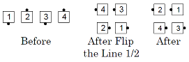

Tagging Calls Back to a Wave
Part 1: Do the "any Tagging Call" to the 1/2 Tag
position.
Part 2: Scoot Back.
Flip Back. From a wave: Flip The Line ½, then Scoot Back. Ends in a box circulate formation. This call has two parts.


Tag Back to a Wave. From a line or wave: ½ Tag and Scoot Back. Ends in box circulate formation. This call has two parts.
Vertical Tag Back to a Wave. From box circulate, facing couples, etc.: Vertical ½ Tag, then Scoot Back. Ends in box circulate formation. This call has two parts.
© Copyright 1983, 1986-1988, 1995-2017 Bill Davis, John Sybalsky and CALLERLAB Inc., The International Association of Square Dance Callers. Permission to reprint, republish, and create derivative works without royalty is hereby granted, provided this notice appears. Publication on the Internet of derivative works without royalty is hereby granted provided this notice appears. Permission to quote parts or all of this document without royalty is hereby granted, provided this notice is included. Information contained herein shall not be changed nor revised in any derivation or publication.